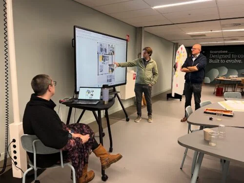

Infotag am 13. Februar 2027
Am Samstag, 13. Februar 2027 öffnen wir unsere Türen am Standort Kirschhecke 10. Lerne unsere Bildungsgänge kennen, sprich mit Lehrkräften sowie Schülerinnen und Schülern und stelle deine Fragen zur Anmeldung.
Was an unserer Schule gerade passiert.
Am Samstag, 13. Februar 2027 öffnen wir unsere Türen am Standort Kirschhecke 10. Lerne unsere Bildungsgänge kennen, sprich mit Lehrkräften sowie Schülerinnen und Schülern und stelle deine Fragen zur Anmeldung.

Große Freude an unserer Schule! Die IHK Mittlerer Niederrhein hat uns als „Bestes Berufskolleg 2026“ ausgezeichnet. Diesen Titel erhält das Berufskolleg mit den meisten ausgezeichneten Ausbildungsabsolventinnen und -absolventen.
Die Preisverleihung fand am Freitag, 9. Oktober 2026, im NEW Kunstwerk in Mönchengladbach-Wickrath statt. Bei der IHK-Bestenehrung wurden die besten Auszubildenden, Ausbildungsbetriebe und Berufskollegs sowie die erfolgreichsten Fortbildungsabsolventinnen und -absolventen am Mittleren Niederrhein geehrt.
Unsere Schulleiterin Stephany Kerstges nahm die Urkunde von IHK-Hauptgeschäftsführer Jürgen Steinmetz entgegen: „Dieser Preis macht uns stolz und ist ein schöner Erfolg für unsere gesamte Schulgemeinschaft.“
Wir gratulieren unseren Absolventinnen und Absolventen herzlich. Ein großes Dankeschön gilt den Ausbildungsbetrieben und allen Kolleginnen und Kollegen, die unsere Auszubildenden begleitet haben.

Am 24. November 2025 nahmen Schülerinnen, Schüler und Lehrkräfte an einem ganztägigen Lernraum-Workshop beim Schulmöbelhersteller Eromesmarko im niederländischen Wijchen teil. Gemeinsam entwickelten sie Ideen für moderne Lernumgebungen, die zum Beispiel selbstorganisiertes Lernen unterstützen.
Die Schülerinnen und Schüler brachten inspirierende Ideen ein, die in die Planung der neuen Lernräume am Standort Kirschhecke einfließen. Danke an alle, die diesen Tag mitgestaltet haben!
Die Elfriede Kürble Stiftung und der Integrationsrat der Stadt Mönchengladbach haben Schulprojekte zur Vielfalt in der Gesellschaft ausgezeichnet.
Mit unseren Schülerinnen und Schülern haben wir einen Tag zur Demokratiebildung gestaltet und unsere Grundrechte in den Blick genommen. Entstanden sind viele Audios, die mit dem Satz „Ich steh auf für …“ enden. Dafür gab es den 2. Platz. Das Preisgeld fließt in weitere Projekte.